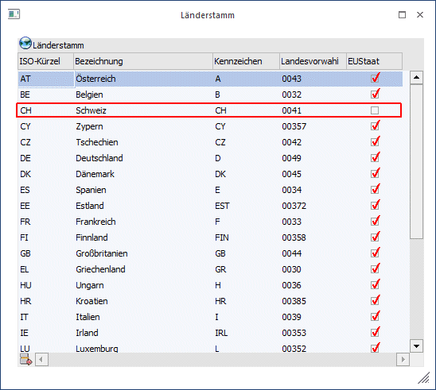
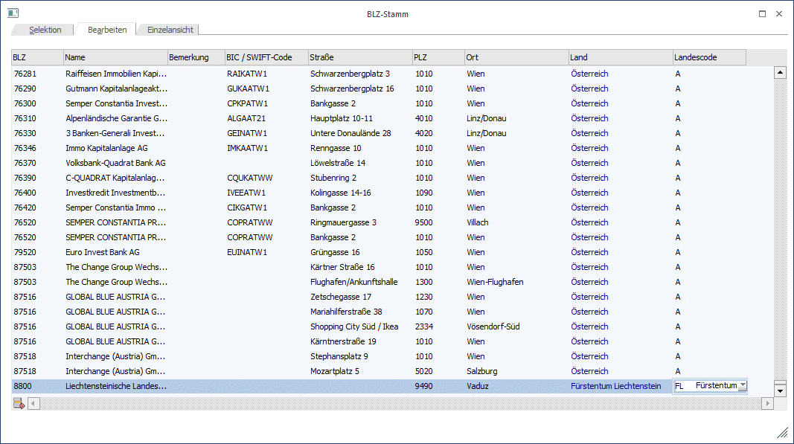
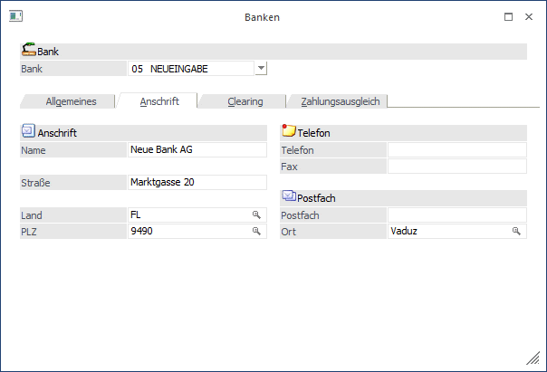
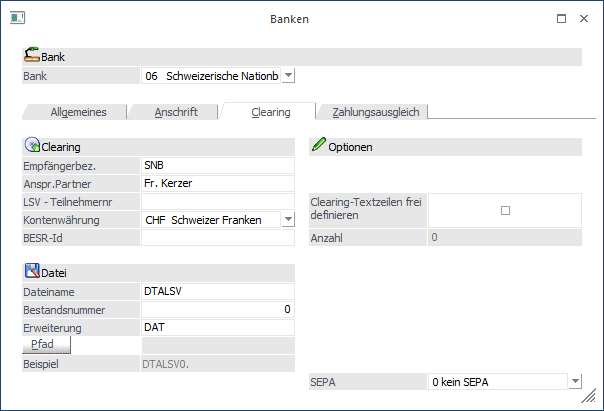

Um den "Schweizer bzw. Liechtensteiner Zahlungsverkehr" durchführen zu können, müssen die folgenden Einstellungen beachtet werden.
Im Länderstamm (WinLine START/Optionen/Länderstamm) muss das entsprechende Land, bzw. das ISO-Kürzel hinterlegt werden.
Für die Schweiz ist dies "CH"; für Liechtenstein "LI" oder "FL":

Bankleitzahlenstamm - Banken im Bankenstamm einrichten
Damit der Zahlungsverkehr durchgeführt werden kann, muss die benötigte Bank im Bankenstamm hinterlegt sein.
Der Bankenstamm kann über den Menüpunkt "Optionen/Bankleitzahlen" im WinLine START aufgerufen werden.
Die Anlage einer neuen Bank erfolgt im Register "Bearbeiten" durch Anklicken der nächsten freien Zeile.

In der Schweiz/Liechtenstein heißen die Bankleitzahlen "Banken-Clearing Nummern (BC)"; d.h. in der Spalte "BLZ" muss die "BC" eingegeben werden.
Als Landescode muss natürlich das entsprechende Land, lt. Länderstamm, zugewiesen werden.
Achtung
Da es für den Zahlungsverkehr in der WinLine unbedingt erforderlich ist, eine BLZ anzugeben, muss auch z.B. bei "Zahlungen zugunsten eines Postkontos eines Begünstigten" eine BLZ verwendet werden.
Hier kann eine sogenannte "Dummy"-BLZ angelegt werden.
Im Bankenstamm können die Bankinstitute verwaltet werden, mit denen ein elektronischer Zahlungsverkehr durchgeführt wird. Der Bankenstamm ist auch Voraussetzung dafür, dass der Zahlungsverkehr eingesetzt werden kann.
Anschrift
Die Besonderheit bei der Anlage einer Bank für den "Schweizer/Liechtensteiner Zahlungsverkehr" ist, dass im Register "Anschrift" als Länderkennzeichen "CH" für die Schweiz oder "LI" für Liechtenstein eingetragen werden muss.
Aufgrund dieses Länderkennzeichens erfolgt die Zuordnung des Ausgabeformates für die Clearingdatei; für die Schweiz/Liechtenstein ist dies eine ASCII-Datei.
Weiters wird anhand des Bankenstamms unterschieden, ob es sich um einen Inlands-, oder Auslandszahlungsverkehr handelt.

Bei Zahlungen von Liechtenstein in die Schweiz oder umgekehrt, handelt es sich immer um einen Inlandszahlungsverkehr.
Clearing
Im Register "Clearing" kann der Name der Datei, sowie die Dateierweiterung angegeben werden:
Für den Schweizer Zahlungsverkehr muss die Dateierweiterung "DTA" verwendet werden:
